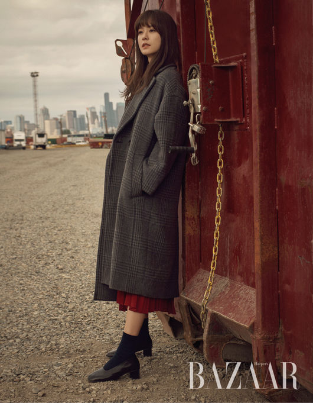
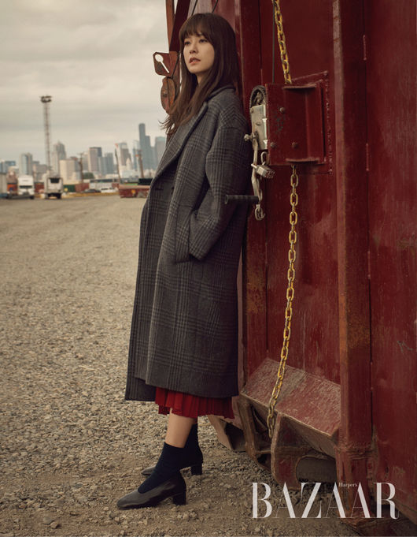
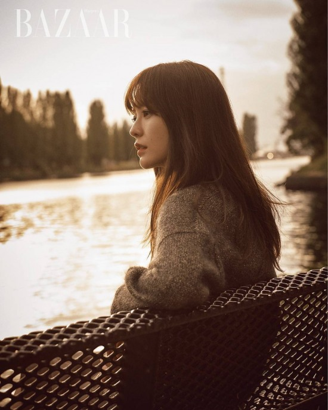
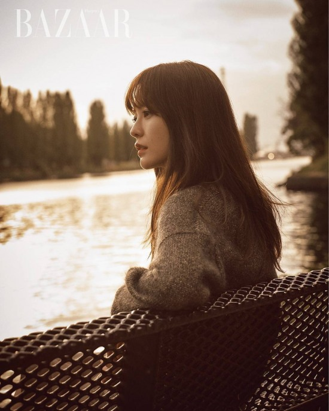

스파이더맨(MCU)
마블 시네마틱 유니버스의 스파이더맨이자, 마블 스튜디오 스파이더맨 시리즈의 주인공.
이쪽 세계관의 스파이더맨은 원작에나 원작에서 파생된 다른 스파이더맨과 굉장히 다른 모습을 보이는데, 1군 히어로로서 진중한 모습을 보였던 원작과는 달리 다른 영웅들의 도움으로 성장하는 미숙한 2군 히어로로서 어떠한 상황에서도 쉴새없이 떠들어대는 10대 너드 청소년의 모습으로 등장하는 것이 특징이다. MCU 최초의 10대 슈퍼히어로(미성년자)다.
성격
현 어벤져스 멤버들 중 가장 막내이자 유일한 10대 히어로인 만큼 발랄하고 수다스러우며 청소년 특유의 미성숙한 면모도 함께 가진 성격의 소유자로 묘사된다. 십대 소년의 모습을 강조하기 위해 이전 작들의 스파이더맨보다 더 촐싹대고 집중력과 상황 판단력이 떨어지며 많이 수다스럽다. 시빌워에서는 팔콘한테 전투 중에는 말을 그렇게 많이 하는 게 아니라고 한 마디 들었으며, 작중 내내 입을 가만히 두지를 않는다. 호기심 많은 것도 마찬가지라서 본의 아니게 여러가지 사고도 많이 친다. 특히 캡틴 아메리카: 시빌 워에서 스파이더맨: 홈커밍까지는 토니 스타크에게 인정받고 싶다는 공명심과 어벤져스가 되고 싶다는 동경심이 강했기 때문에 무모하게 행동하기도 한다. 어벤져스: 인피니티 워에서는 많이 성숙해져서 이전보다는 그런 면이 줄어들었긴 했지만 긴급한 상황에도 영화 에일리언 얘기를 계속 꺼내거나 토니에게 새 수트를 받았다고 방방대는 걸보면 영락없는 십대 소년이다.
청소년답게 어리숙하고 순진한 구석이 많아서 본의 아니게 개그씬을 유발한다. 공항 전투에서 처음 등장했을 당시 캡틴 아메리카에게 팬이라며 경례를 하고 수다를 멈추질 못해서 거기까지 해두자며 아이언맨에게 제지를 당하거나, 홈커밍에서 문 열어주는 토니의 제스쳐를 착각해서 포옹으로 오인하고 덥썩 안기거나, 닥터 스트레인지와 처음 만났을 때 본명을 히어로 네임으로 착각한다든지... 홈커밍에서는 본인도 히어로면서 집에서 혼자 마스크를 쓰고 토르 흉내를 내는 소년다운 모습도 보여줬다. 대부분의 히어로들이 자기 신분을 공개하고 활동하는 MCU에서 거의 유일하게 정체를 감추고 활동하고 있는 히어로이기도 하다. 이는 10대 소년이라는 신분과 메이 백모를 걱정시키기 싫다는 마음 때문으로 메이 백모를 생각하는 마음이 각별한 효자이기도 하다. 위의 청소년이라는 신분이라서 그런지는 몰라도 불살 기믹이 부각되는 히어로이다. 이후에 미스테리오가 사망했지만 이쪽은 다른 빌런들과 마찬가지로 일종의 자업자득식의 사망이었기에 작품 외적으로 비판이 없는 편이다.
아이언맨과의 관계
스파이더맨의 MCU 합류에 따라 맞춘 설정이지만 어릴 적인 아이언맨 2 시점에서 처음 만난 이후 쪽 동경심을 가졌다는 걸 암시한다. 데뷔작 캡틴 아메리카: 시빌 워에서 토니가 자기를 만나 스카웃하자 처음에는 정체를 들킨 걸 당황하면서도 결국은 그를 따라갔고, 팔콘과 윈터 솔져와의 대결에서는 스타크 씨에게 잘 보여야 한다라는 목적을 보여준다. 스파이더맨: 홈커밍에서도 토니가 수 차례 경고했지만 계속해서 벌처를 쫓다 결국 사고를 치면서 큰 인명 피해를 낼 뻔했고, 이후 토니에게 혼나면서도 전 아저씨처럼 되고 싶었어요.라고 말하기도 했다. 토니는 한 명의 어른으로서 피터에 관해서는 책임감 있는 어른이자 멘토, 아버지처럼 스파이더맨을 엄청 아끼고 있다. 아이언맨 시절 거만하기 짝이 없는 날라리나 다름 없었지만 여러 사건을 거쳐 성장하면서 타인에 대한 배려심과 걱정에 대해 배웠으며 "하지만 네가 죽었으면? 난 그걸 내 책임이라고 생각했을 거다."라며 피터가 친 사고에 진심으로 혼내면서도 걱정했다. 어벤져스: 인피니티 워에서도 피터에 대한 걱정과 책임은 변하지 않아서 아이언 스파이더 슈트를 강제로 입히고 지구로 귀환시키려고 했고 그가 몰래 우주선에 탔다는 걸 알자 진심으로 화내고 걱정했다. 또한 이 슈트의 이름은 Mk.17-A인데 이름부터 미국에서 운전면허를 따는 17세에 아버지가 아들에게 중고차를 선물하는 풍습을 슈트로 치환하여 두 사람이 유사 부자 관계임을 은유적으로 나타내는 것이다. 슈트를 받은 피터가 새 차 냄새가 난다는 대사를 치는 것을 보면 빼박. 중고차를 아버지가 깨끗하게 세차해서 새 차처럼 만들어 선물하는 것만큼 애정 어린 선물을 받았다고 좋아하는 것이다.
아버지도 죽고 큰아버지인 벤 파커도 잃고 백모인 메이 파커 하나만 보고 살아가던 피터에게 토니는 그저 후원자만이 아닌 인생의 스승이자 아버지와 다름없는 사람이었다. 이걸 잘 알 수 있는 게 스파이더맨: 홈커밍과 어벤져스: 인피니티 워 중반부까지의 피터의 행적인데 스파이더맨: 홈커밍은 물론 어벤져스: 인피니티 워에서도 피터는 타이탄에서 가디언즈 오브 갤럭시와 만나기 전까진 타노스의 존재와 인피니티 워 사태의 심각성을 모른 채 여유로운 모습만 보였다. 밑도 끝도 없이 해대던 영화 드립이 그 증거. 즉 피터가 지구를 떠나 우주 저 멀리 타이탄까지 오게 된 것은 순전히 토니에게 인정받고 싶었기 때문. 반대로 토니 또한 피터를 정말 자기 자식처럼 생각하는데, 스파이더맨: 홈커밍에서 슈트를 압수한 것도 자신과 같은 실수를 저지르는 모습을 볼 수 없어서 그랬던 것이고 어벤져스: 인피니티 워에서도 토니는 타노스를 만나기 전까진 피터를 지키는데 급급했었다. 결정적으로 어벤져스: 엔드게임 초반부 지구로 돌아온 토니가 캡틴과 페퍼를 보자마자 자신의 안부보다도 "피터가 죽었어...내가 지켰어야 했는데..."라며 서글프게 울었고 가장 먼저 리타이어 하고 5년이나 은둔생활을 한 토니가 친딸인 모건이 있었음에도 성공할 가능성이 낮을지도 모르는 시간여행을 감행한 건 피터를 살리고픈 마음이 컸던 것으로 보인다. 둘은 서로에게 단순한 멘토-멘티라기보다 비록 피가 이어진 건 아니지만 아버지와 아들과 다름 없는 관계였다.
둘의 관계는 하워드-토니 스타크 부자와도 대조된다. 하워드와 토니는 그야말로 판박이였지만 고집불통, 난봉꾼 망나니, 자기혐오, 소중한 사람에게조차 삐딱하게 말하는 것까지 닮았다. 하워드는 나이를 들면서 정신을 차리긴 했지만 평생 자신이 진정한 영웅이었던 친구인 캡틴 아메리카를 지키지 못했다는 죄책감에 시달렸고, 자신의 괴팍함을 받아줄 훌륭한 여자를 만났지만 본인이 영웅으로 성장한 건 아니었기에 단점들을 완전히 극복하진 못했다. 이 점은 아들 토니를 극진히 사랑함에도 잘못된 애정표현(잔소리와 쓴소리, 칭찬해주지 않음)으로 둘의 관계가 틀어지는 원인이 되었다. 그러나 토니-피터의 관계에선 토니가 시빌워 사태까지 겪으며 어른으로서, 영웅으로서 스스로 성장한 이후였다. "홈커밍"에서 "우리 아버지는 나한테 칭찬 한번 안 하셨는데...난 그 악순환을 깨보려고"라고 하는 걸 보면 알 수 있다. 반면 피터 역시 천재적인 두뇌와 장난끼 등 토니와 닮은 면도 많지만 자존심이 하늘을 찌르는 그와 달리 겸손하고, 잘못을 인정할 줄 알며 솔직한, 젊은 시절 토니보다 훨씬 성숙하고 현명한 아이였다. 단순히 닮기만 한 게 아니라 다른 면을 서로 보완해줄 수 있는 좋은 관계였던 것.

 

 
[광고~]

[광고~]